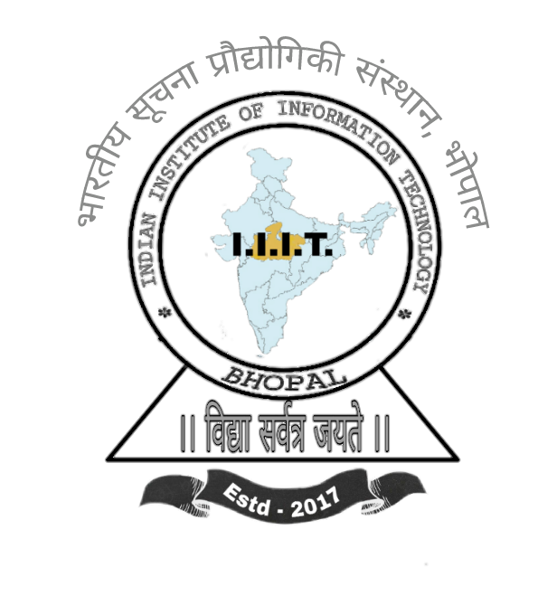

INDIAN INSTITUTE OF INFORMATION TECHNOLOGY, BHOPAL (M.P.)
" About Us "
IIIT BHOPAL is a institute for National Importance Under MHRD in 23 IIIT'S all over country.
We are the students of IIIT BHOPAL 2nd Year from CSE Branch.
This Project is created for CSE WORKSHOP (CSE-216) LAB Evaluation by using PHP , HTML-CSS , MYSQL ,
& JAVSCRIPT under the Dr. Yadunath Pathak(Profeeser IIIT BHOPAL).
This Project purpose is that to give the Financial Support for Those students who are facing
Finacial Problems to continue his study.
PROJECT NAME :- " STUDENT SOCIAL WELFARE SOCITY "
STUDENTS NAME
1. PRAVEEN AHIRWAR 2.ABHISHEK KUMAR
B.TECH B.TECH
2nd Year (CSE) 2nd Year (CSE)